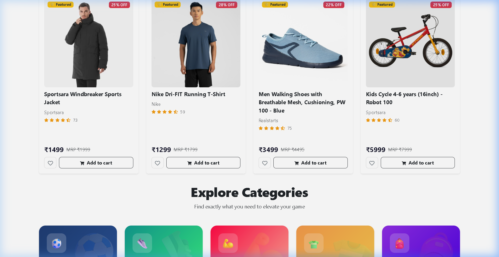
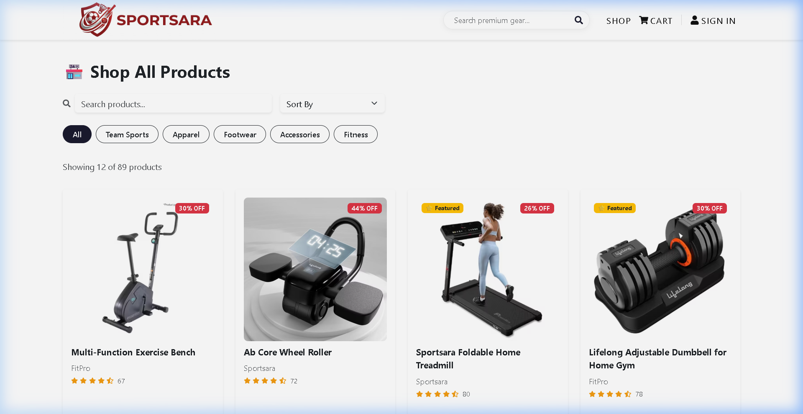
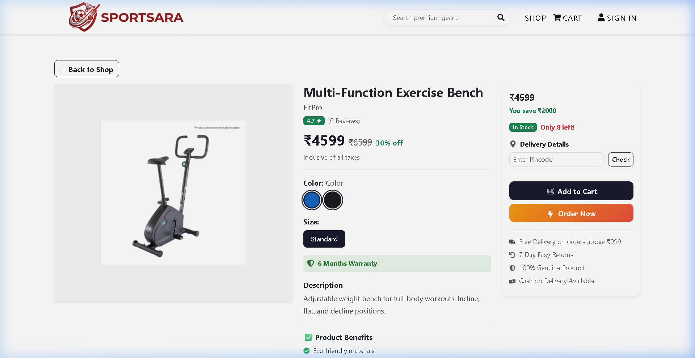
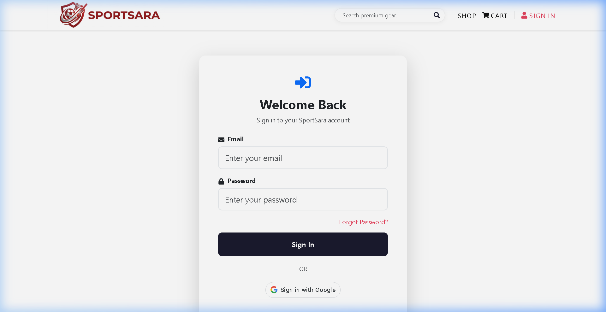
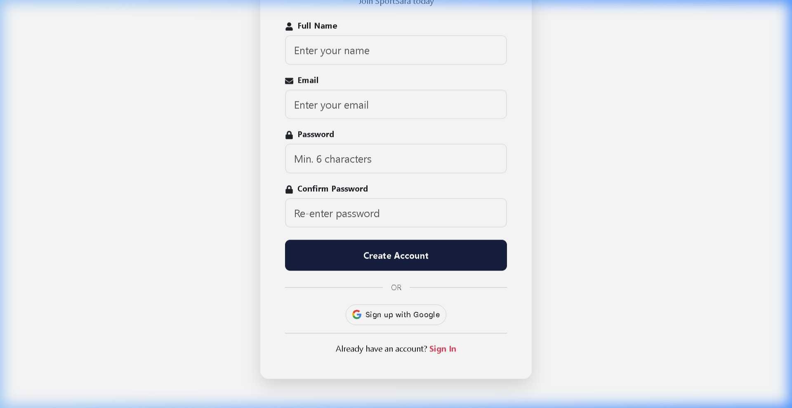
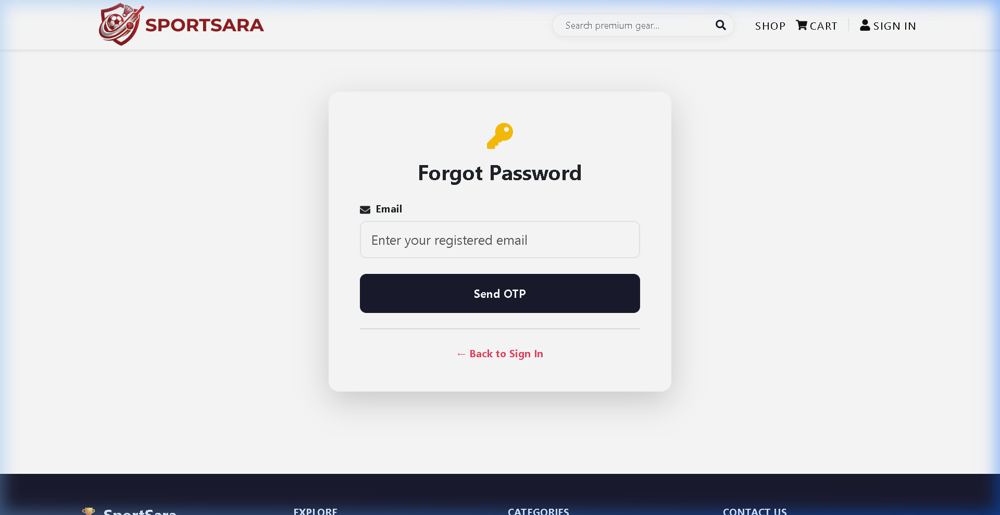
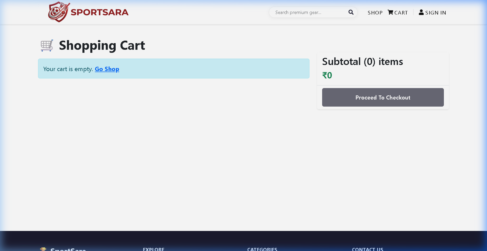

| Sr No | Description | Page No |
|---|---|---|
| CHAPTER 1: INTRODUCTION | ||
| 1 | 1.1 Introduction to the System | 2 |
| 2 | 1.2 Problem Definition | 2 |
| 3 | 1.3 Aim | 3 |
| 4 | 1.4 Objectives | 3 |
| 5 | 1.5 Goal | 3 |
| 6 | 1.6 Need of the System | 3 |
| 7 | 1.7 Scope of the Project | 4 |
| Sr No | Description | Page No |
|---|---|---|
| CHAPTER 2: REQUIREMENT SPECIFICATION | ||
| 8 | 2.1 Introduction | 5 |
| 9 | 2.2 System Environment | 5 |
| 10 | 2.3 Software Requirements | 5 |
| 11 | 2.4 Hardware Requirements | 6 |
| 12 | 2.5 Methodology | 6 |
| Sr No | Description | Page No |
|---|---|---|
| CHAPTER 3: SYSTEM ANALYSIS | ||
| 13 | 3.1 Introduction | 8 |
| 14 | 3.2 Existing System Analysis | 8 |
| 15 | 3.3 Proposed System | 8 |
| 16 | 3.4 Feasibility Analysis | 8 |
| 17 | 3.5 Functional Requirements | 9 |
| 18 | 3.6 Non-Functional Requirements | 9 |
| 19 | 3.7 Use Case Analysis | 9 |
| 20 | 3.8 Gantt Chart | 10 |
| Sr No | Description | Page No |
|---|---|---|
| CHAPTER 4: SURVEY OF TECHNOLOGY | ||
| 21 | 4.1 Technology Stack Overview | 11 |
| 22 | 4.2 Frontend Technologies | 11 |
| 23 | 4.3 Backend Technologies | 12 |
| 24 | 4.4 Database Technology | 12 |
| 25 | 4.5 Authentication Technologies | 13 |
| 26 | 4.6 Technology Comparison | 14 |
| 27 | 4.7 Working Principles | 15 |
| Sr No | Description | Page No |
|---|---|---|
| CHAPTER 5: SYSTEM DESIGN | ||
| 28 | 5.1 System Architecture | 17 |
| 29 | 5.2 Data Flow Diagram | 17 |
| 30 | 5.3 Database Schema | 18 |
| 31 | 5.4 REST API Design | 20 |
| 32 | 5.5 E-R Diagram | 21 |
| 33 | 5.6 Sequence Diagrams | 21 |
| Sr No | Description | Page No |
|---|---|---|
| CHAPTER 6: SYSTEM IMPLEMENTATION | ||
| 34 | 6.1 Project Structure | 22 |
| 35 | 6.2 Server Configuration | 23 |
| 36 | 6.3 Authentication Module | 24 |
| 37 | 6.4 Cart Management Module | 25 |
| 38 | 6.5 Order Processing Module | 25 |
| 39 | 6.6 Review System Module | 26 |
| 40 | 6.7 Admin Dashboard Module | 26 |
| 41 | 6.8 Email Service Module | 27 |
| 42 | 6.9 Test Cases | 28 |
| Sr No | Description | Page No |
|---|---|---|
| CHAPTER 7: RESULT | ||
| 43 | 7.1 Introduction | 29 |
| 44 | 7.2 Screens Achieved in the Project | 30 |
| 45 | 7.3 Functional Results | 37 |
| 46 | 7.4 Performance Results | 39 |
| 47 | 7.5 Security Results | 40 |
| 48 | 7.6 Deployment Configuration | 42 |
| Sr No | Description | Page No |
|---|---|---|
| CHAPTER 8: CONCLUSION AND FUTURE SCOPE | ||
| 49 | 8.1 Conclusion | 46 |
| 50 | 8.2 Future Enhancement | 47 |
| 51 | 8.3 Lessons Learned | 48 |
| Sr No | Description | Page No |
|---|---|---|
| CHAPTER 9: REFERENCES | ||
| 52 | 9.1 Book References | 49 |
| 53 | 9.2 Technology Documentation | 49 |
| 54 | 9.3 Web References | 49 |
| Sr No | Description | Page No |
|---|---|---|
| APPENDICES | ||
| 55 | Appendix A: Glossary | 50 |
| 56 | Appendix B: Abbreviations | 51 |
| 57 | Appendix C: NPM Dependencies | 51 |
The sports and fitness industry is experiencing a major shift toward online retail. Consumers increasingly prefer browsing, comparing, and purchasing sports gear and apparel through digital platforms rather than visiting physical stores. Traditional retail methods such as manual billing, paper-based inventory tracking, and walk-in-only shopping create significant limitations in convenience, reach, and efficiency.
SportSara is a full-stack e-commerce web application designed specifically for sports enthusiasts. Built using the MERN stack (MongoDB, Express.js, React.js, Node.js), it provides a seamless online shopping experience for sports equipment, apparel, footwear, fitness accessories, and team sports gear.
The platform enables customers to browse a curated catalog of sports products, filter by categories, view detailed product information including sizes and colors, add items to their cart, and complete purchases through a secure checkout process with address auto-completion powered by Google Maps API. An integrated admin dashboard allows administrators to manage products, orders, and users from a centralized interface.
SportSara incorporates modern security practices including OTP-based email verification during registration, Google OAuth social login, JWT-based session management, and bcrypt password hashing. The system also features automated email notifications via the Brevo transactional email API, product reviews and ratings, and real-time order status tracking.
The application follows a client-server architecture where the React.js frontend communicates with the Express.js backend through RESTful APIs, and the backend interacts with MongoDB Atlas cloud database for persistent data storage. This separation of concerns ensures maintainability, scalability, and ease of deployment.
Traditional sports retail businesses face several challenges that limit their growth and customer satisfaction:
These limitations reduce sales opportunities, customer satisfaction, and operational efficiency, creating a strong need for an automated e-commerce solution like SportSara.
The aim of SportSara is to develop a modern, user-friendly, full-stack e-commerce platform tailored for the sports and fitness industry. It enables customers to browse, select, and purchase sports products online while providing administrators with powerful tools to manage the entire business digitally.
The goal of SportSara is to digitize the sports retail experience through a reliable and scalable web platform, offering:
SportSara is needed due to the growing demand for online sports shopping and the limitations of traditional retail methods.
The scope of SportSara encompasses the following functional areas:
Requirement Specification is a critical phase of software development that defines the functional and technical needs of the project. It ensures that the software is developed according to user expectations and business requirements.
For the SportSara E-Commerce Platform, requirement specification identifies the software tools, hardware resources, system environment, and development methodology needed to build a reliable and scalable online store.
| Component | Specification |
|---|---|
| Operating System | Windows 11 |
| Code Editor | Visual Studio Code |
| Frontend Runtime | Web Browser (Chrome) |
| Backend Runtime | Node.js v24 |
| Database | MongoDB Atlas (Cloud) |
| Version Control | Git / GitHub |
| API Testing | Postman / Browser DevTools |
| Component | Specification |
|---|---|
| Frontend Hosting | Vercel |
| Backend Hosting | Render |
| Database Hosting | MongoDB Atlas |
| User Access | Internet Browser |
| Devices Supported | Mobile / Tablet / Laptop / Desktop |
| Software | Purpose |
|---|---|
| HTML5 | Page structure and semantic content |
| CSS3 | Styling, animations, and responsive design |
| JavaScript (ES6+) | Client-side logic and interactivity |
| React.js | Component-based UI framework |
| React Router DOM | Client-side routing and navigation |
| React Hot Toast | Toast notification system |
| Google Maps Places API | Address autocomplete in checkout |
| Software | Purpose |
|---|---|
| Node.js | Server-side JavaScript runtime |
| Express.js v5 | Backend web framework and API routing |
| Mongoose | MongoDB ODM for data modeling |
| jsonwebtoken | JWT-based authentication |
| bcryptjs | Password hashing and security |
| google-auth-library | Google OAuth verification |
| multer | File upload handling |
| cors | Cross-origin request handling |
| dotenv | Environment variable management |
| Component | Requirement |
|---|---|
| Processor | Intel Core i3 or equivalent |
| RAM | 4 GB |
| Storage | 20 GB Free Space |
| Display | 1366 × 768 |
| Internet | Broadband connection |
| Component | Requirement |
|---|---|
| Processor | Intel Core i5 / i7 or equivalent |
| RAM | 8 GB or above |
| Storage | SSD 256 GB+ |
| Display | Full HD (1920 × 1080) |
| Internet | High-speed broadband |
For the SportSara project, Agile Methodology was used because it supports continuous development, iterative testing, and incremental improvement.
Agile Cycle: Requirement → Design → Develop → Test → Deploy → Improve
Agile methodology enabled rapid development of SportSara with high-quality output and the flexibility to add features like Google OAuth, address autocomplete, and email verification during the development cycle.
System Analysis involves studying the existing system and defining requirements for the new system. It helps identify problems, understand user needs, and design effective solutions. For SportSara, analysis focused on the online sports retail process — product discovery, ordering, payments, and fulfillment.
Traditional sports retail stores rely on manual processes such as walk-in purchases, handwritten bills, phone-based order inquiries, and physical inventory registers.
SportSara automates the entire sports retail experience through a digital platform:
| Module | Functional Requirement |
|---|---|
| Authentication | User registration with email OTP verification |
| Authentication | Google OAuth social login |
| Authentication | Email/password login with JWT tokens |
| Authentication | Password reset via OTP email |
| Products | Browse products by category |
| Products | View product details with variants |
| Products | Search products by keyword |
| Cart | Add/remove items with size and color |
| Cart | Update item quantity |
| Orders | Place order with shipping address |
| Orders | View order history and status |
| Reviews | Submit product review and rating |
| Admin | CRUD operations for products |
| Admin | Manage order statuses |
| Admin | View dashboard analytics |
| Admin | Manage user roles |
| Requirement | Description |
|---|---|
| Performance | API response times under 500ms, page load under 2 seconds |
| Security | Password encryption, JWT authentication, role-based access |
| Responsiveness | Mobile-first design across all screen sizes |
| Reliability | 99.9% uptime via cloud hosting |
| Scalability | Horizontal scaling with MongoDB Atlas and cloud deployment |
| Maintainability | Modular code with separation of concerns |
| Usability | Intuitive navigation and clear error messages |
| Field | Description |
|---|---|
| Actor | New Customer |
| Precondition | User is not registered |
| Steps | 1) User enters name, email, password 2) System sends 6-digit OTP to email via Brevo API 3) User enters OTP 4) System verifies OTP (5-minute expiry) 5) Account created with hashed password 6) JWT token issued |
| Postcondition | User is logged in with new account |
| Field | Description |
|---|---|
| Actor | Registered Customer |
| Precondition | User is logged in |
| Steps | 1) User browses products 2) Selects size and color 3) Adds to cart 4) Proceeds to checkout 5) Enters shipping address with Google Maps autocomplete 6) Selects payment method 7) Confirms order |
| Postcondition | Order created, stock updated, cart cleared |
| Field | Description |
|---|---|
| Actor | Admin |
| Precondition | Admin is logged in |
| Steps | 1) Admin views all orders 2) Selects an order 3) Updates status (Processing → Confirmed → Shipped → Delivered) 4) System saves status |
| Postcondition | Order status updated |
A Gantt Chart represents tasks and schedules over a timeline for project planning.
| Task | W1 | W2 | W3 | W4 | W5 | W6 | W7 | W8 |
|---|---|---|---|---|---|---|---|---|
| Requirement Gathering | ✔ | ✔ | ||||||
| System Analysis | ✔ | ✔ | ||||||
| UI Design | ✔ | ✔ | ||||||
| Database Design | ✔ | ✔ | ||||||
| Frontend Development | ✔ | ✔ | ✔ | |||||
| Backend Development | ✔ | ✔ | ✔ | |||||
| API Integration | ✔ | ✔ | ||||||
| Testing | ✔ | ✔ | ||||||
| Deployment | ✔ | ✔ | ||||||
| Documentation | ✔ | ✔ | ✔ | ✔ | ✔ | ✔ |
System analysis identified the inefficiencies of manual sports retail systems and confirmed the need for a digital solution. SportSara provides a complete e-commerce platform for managing product sales efficiently. Feasibility analysis confirmed the project is practical and cost-effective. The use case analysis defined clear user interactions for all major system functions. The Gantt chart ensured proper planning and timely execution of all development phases.
Technology selection is crucial for the performance, security, scalability, and maintainability of any software project. For SportSara, the MERN stack was chosen — a widely adopted JavaScript-based technology stack that enables full-stack development using a single programming language across both frontend and backend.
| Layer | Technology | Version |
|---|---|---|
| Frontend Framework | React.js | 18.x |
| Styling | CSS3 | — |
| Backend Runtime | Node.js | v24 |
| Backend Framework | Express.js | v5.2 |
| Database | MongoDB (Mongoose) | v8.x |
| Authentication | JWT + Google OAuth 2.0 | — |
| Email Service | Brevo REST API | v3 |
| File Uploads | Multer | — |
| Maps | Google Maps Places API | New |
| Frontend Hosting | Vercel | — |
| Backend Hosting | Render | — |
React.js is a JavaScript library developed by Facebook for building dynamic, component-based user interfaces. It uses a virtual DOM (Document Object Model) to efficiently update only the changed parts of the page, resulting in fast rendering and a smooth user experience.
Key Features Used in SportSara:
Custom CSS3 provides complete control over the application's visual design without dependency on external UI frameworks.
Features Used: Flexbox and Grid layouts, CSS animations and transitions, responsive media queries, custom scrollbars, form styling, glassmorphism effects, dark-themed admin panel.
The Google Maps Places API (New) is integrated into the checkout page to provide real-time address autocomplete suggestions. As users type their address, the API returns matching locations. When a suggestion is selected, the system auto-fills city, state, and pincode fields.
Node.js is a server-side JavaScript runtime built on Chrome's V8 engine. It enables non-blocking, event-driven I/O operations, making it ideal for handling concurrent API requests in an e-commerce application.
Why Node.js for SportSara:
Express.js is a minimal and flexible web framework for Node.js that provides robust HTTP routing, middleware support, and error handling.
Middleware Used in SportSara:
Routes Configured: 8 route modules — auth, products, cart, orders, payment, reviews, admin, upload
MongoDB is a NoSQL document database that stores data in flexible JSON-like BSON documents. Unlike relational databases, MongoDB does not require a fixed schema, allowing easy modification of data structures.
Advantages for SportSara:
Mongoose provides schema-based data modeling for MongoDB, adding validation, type casting, query building, and middleware hooks. SportSara uses 6 Mongoose models: User, Product, Order, Review, OTP, and PasswordResetOTP.
Key Mongoose Features Used:
JWT provides stateless, token-based authentication for secure API access. When a user logs in, the server generates a signed JWT containing the user ID, which is sent back to the client. The client includes this token in the Authorization header of every subsequent API request.
JWT Configuration in SportSara:
Google OAuth allows users to authenticate using their Google account. SportSara uses the google-auth-library package to verify Google ID tokens on the backend.
Flow: 1) User clicks "Sign in with Google" 2) Google returns ID token 3) Backend verifies token with google-auth-library 4) If email exists, login; if not, create account 5) JWT token issued
A 6-digit random OTP is generated during registration and password reset. The OTP is stored in MongoDB with a 5-minute TTL (Time To Live) expiry using createdAt index. The OTP is sent to the user's email via the Brevo transactional email API.
All passwords are hashed using bcrypt with 10 salt rounds before storage. The pre-save hook automatically hashes passwords when modified. A comparePassword instance method verifies login credentials.
RESTful APIs connect the React frontend with the Express.js backend using JSON data format over HTTP.
| Method | Use | Example |
|---|---|---|
| GET | Read/Fetch data | GET /api/products |
| POST | Create new records | POST /api/auth/login |
| PUT | Update existing records | PUT /api/admin/orders/:id |
| DELETE | Remove records | DELETE /api/cart/remove/:id |
SportSara uses the Brevo (formerly Sendinblue) REST API for sending OTP verification emails and password reset emails. Emails are sent via HTTPS POST requests to api.brevo.com/v3/smtp/email with the API key stored in environment variables.
| Feature | MERN (React) | MEAN (Angular) |
|---|---|---|
| Learning Curve | Easier — library-based | Steeper — full framework |
| Performance | Virtual DOM — faster rendering | Real DOM — slower updates |
| Flexibility | Choose own tools | Opinionated structure |
| Bundle Size | Smaller — tree-shakeable | Larger default bundle |
| Community | Larger npm ecosystem | Enterprise-focused |
| Mobile | React Native available | Ionic/NativeScript |
React.js was chosen for SportSara because of its simpler learning curve, faster rendering via virtual DOM, larger community support, and the ability to extend to mobile apps via React Native in the future.
| Feature | MongoDB (NoSQL) | MySQL (SQL) |
|---|---|---|
| Schema | Flexible — no fixed schema | Rigid — predefined tables |
| Data Format | JSON-like BSON documents | Rows and columns |
| Scaling | Horizontal (sharding) | Vertical (bigger server) |
| Relationships | Embedding + referencing | Foreign keys + JOINs |
| Product Variants | Easy — nested arrays | Complex — multiple tables |
| Cloud Hosting | Atlas free tier | Paid services mostly |
MongoDB was ideal for SportSara because product data varies significantly — some products have sizes, some have colors, some have both. MongoDB's flexible schema handles this naturally without requiring multiple join tables. The embedded cart pattern within the user document also eliminates the need for a separate cart table, improving read performance.
| Feature | Express.js v5 | Fastify |
|---|---|---|
| Maturity | Most popular Node.js framework | Newer, less adoption |
| Middleware | Vast ecosystem | Limited plugin system |
| Documentation | Extensive | Growing |
| Async Support | v5 has native async error handling | Built-in |
| Community | Largest in Node.js | Smaller |
Express.js v5 was chosen because of its industry dominance, extensive middleware ecosystem, and the new async error handling feature that eliminates the need for try-catch wrappers in route handlers.
| Feature | Vercel + Render | AWS (EC2 + S3) |
|---|---|---|
| Setup Time | Minutes (GitHub connect) | Hours (manual config) |
| Cost | Free tier available | Pay-as-you-go |
| CI/CD | Automatic on push | Manual pipeline setup |
| Complexity | Simple dashboard | Complex console |
| SSL | Auto HTTPS | Manual certificate |
| Scaling | Auto-managed | Manual configuration |
Vercel and Render were chosen for their simplicity, zero-configuration deployment, and generous free tiers — perfect for an academic project that needs professional-grade hosting without cost.
When state changes in a React component, React creates a new virtual DOM tree. It then compares the new tree with the previous one using a "diffing" algorithm. Only the nodes that actually changed are updated in the real DOM. This process, called "reconciliation," makes React significantly faster than traditional DOM manipulation.
In SportSara, when a user adds a product to the cart, only the cart icon count and cart sidebar update — the entire page does not re-render. This provides a smooth, app-like experience.
JWT (JSON Web Token) is a compact, URL-safe token format used for stateless authentication:
The three parts are Base64-encoded and joined with dots: xxxxx.yyyyy.zzzzz. The server verifies the token by recalculating the signature with its secret key. If the signatures match, the token is valid and the user ID is extracted from the payload.
SportSara uses multiple indexes to speed up frequent queries:
Without indexes, MongoDB would perform a "collection scan" checking every document. With indexes, queries use B-tree structures to find matching documents in O(log n) time instead of O(n), resulting in sub-100ms query times even with thousands of products.
The MERN stack technologies selected for SportSara are modern, well-supported, and industry-standard. Technology comparisons confirm that React.js, Node.js, MongoDB, and Express.js are optimal choices for this project. The cloud deployment strategy using Vercel, Render, and MongoDB Atlas ensures high availability, easy maintenance, and zero-cost hosting for an academic project.
System Design is the phase where project requirements are converted into a technical blueprint. It defines the software modules, database structure, API endpoints, security model, and communication flow between components. For SportSara, the design focuses on a modular client-server architecture with clear separation between the React frontend, Express.js backend, and MongoDB database.
SportSara follows a Three-Tier Architecture:
Data Flow: React UI → HTTP/REST → Express API → Mongoose ODM → MongoDB Atlas
Customer → SportSara Web App → Express API Server → MongoDB Atlas
Admin → Admin Dashboard → AdminAuth Middleware → Express API → MongoDB Atlas
| Field | Type | Description |
|---|---|---|
| name | String (required) | User's full name |
| String (unique, required) | Login email address | |
| password | String (hashed) | Bcrypt-encrypted password (10 salt rounds) |
| role | String (enum: user, admin) | User role for access control |
| avatar | String | Profile picture URL |
| cart | Array (embedded) | Cart items: {product: ObjectId, quantity, color, size} |
| address | Object (embedded) | Saved address: {street, city, state, pincode, phone} |
| createdAt | Date (auto) | Account creation timestamp |
| Field | Type | Description |
|---|---|---|
| name | String | Product title |
| image | String | Product image URL |
| brand | String | Brand name |
| category | String (enum) | Team Sports / Apparel / Footwear / Accessories / Fitness |
| description | String | Product description |
| price | Number | Selling price (INR) |
| mrp | Number | Maximum retail price |
| rating | Number (0-5) | Average star rating |
| stock | Number | Available quantity |
| featured | Boolean | Featured product flag for homepage |
| sizes | Array of Strings | Available sizes (S, M, L, XL, etc.) |
| colors | Array of Objects | {name, hex, stock} for each color variant |
| specifications | Array of Objects | {key, value} pairs for product specs |
| benefits | Array of Strings | Product benefits list |
| gender | String | Target gender (Men, Women, Unisex) |
| Field | Type | Description |
|---|---|---|
| user | ObjectId (ref: User) | Reference to the buyer |
| items | Array of Objects | {product, name, price, quantity, image, color, size} |
| totalAmount | Number | Total order value in INR |
| shippingAddress | Object | {fullName, street, city, state, pincode, phone} |
| paymentMethod | String | Cash on Delivery / Online |
| status | String (enum) | Processing / Confirmed / Shipped / Delivered / Cancelled |
| createdAt | Date (auto) | Order placement timestamp |
| Field | Type | Description |
|---|---|---|
| user | ObjectId (ref: User) | Reviewer reference |
| product | ObjectId (ref: Product) | Reviewed product reference |
| rating | Number (1-5) | Star rating |
| title | String | Review headline |
| comment | String | Review body text |
| createdAt | Date (auto) | Review timestamp |
Unique Constraint: Compound unique index on {user, product} ensures one review per user per product.
| Collection | Fields | Purpose |
|---|---|---|
| otps | email, otp, name, password, createdAt (TTL: 5min) | Registration OTP verification with pending user data |
| passwordresetotps | email, otp, createdAt (TTL: 5min) | Password reset OTP verification |
| Method | Endpoint | Auth | Purpose |
|---|---|---|---|
| POST | /api/auth/send-otp | No | Send registration OTP |
| POST | /api/auth/verify-otp | No | Verify OTP and create account |
| POST | /api/auth/login | No | Email/password login |
| POST | /api/auth/google | No | Google OAuth login |
| GET | /api/auth/me | JWT | Get current user profile |
| PUT | /api/auth/profile | JWT | Update profile |
| POST | /api/auth/forgot-password | No | Send password reset OTP |
| POST | /api/auth/reset-password | No | Reset password with OTP |
| Method | Endpoint | Auth | Purpose |
|---|---|---|---|
| GET | /api/products | No | List products with filters |
| GET | /api/products/:id | No | Get product details |
| GET | /api/products/:id/reviews | No | Get product reviews |
| Method | Endpoint | Auth | Purpose |
|---|---|---|---|
| GET | /api/cart | JWT | Get user cart |
| POST | /api/cart/add | JWT | Add item to cart |
| PUT | /api/cart/update | JWT | Update item quantity |
| DELETE | /api/cart/remove/:id | JWT | Remove cart item |
| Method | Endpoint | Auth | Purpose |
|---|---|---|---|
| POST | /api/orders | JWT | Place new order (COD) |
| GET | /api/orders | JWT | Get user orders |
| GET | /api/orders/:id | JWT | Get single order details |
| Method | Endpoint | Auth | Purpose |
|---|---|---|---|
| GET | /api/admin/stats | Admin | Dashboard analytics |
| GET | /api/admin/products | Admin | List all products |
| POST | /api/admin/products | Admin | Add new product |
| PUT | /api/admin/products/:id | Admin | Update product |
| DELETE | /api/admin/products/:id | Admin | Delete product |
| GET | /api/admin/orders | Admin | List all orders |
| PUT | /api/admin/orders/:id | Admin | Update order status |
Entity relationships in SportSara:
User → Frontend: Enter name, email, password → Frontend → Backend: POST /api/auth/send-otp → Backend: Generate 6-digit OTP → Backend → Brevo API: Send OTP email → Backend → MongoDB: Store OTP with 5-min TTL → User → Frontend: Enter OTP → Frontend → Backend: POST /api/auth/verify-otp → Backend: Verify OTP, hash password → Backend → MongoDB: Create User → Backend → Frontend: Return JWT token → Frontend: Store token, redirect to home
User → Frontend: Click "Place Order" → Frontend → Backend: POST /api/orders (with JWT) → Backend: auth middleware validates token → Backend → MongoDB: Populate user cart items → Backend: Create order document with item snapshots → Backend: Calculate totalAmount → Backend → MongoDB: Decrement product stock for each item → Backend → MongoDB: Clear user cart → Backend → Frontend: Return order object → Frontend: Show order confirmation
The system design provides a modular three-tier architecture with clear separation of concerns. The MongoDB schema uses document embedding for cart data and referencing for orders and reviews. The REST API design with 25+ endpoints enables seamless frontend-backend communication.
System Implementation converts the design into a working application. SportSara followed a modular development approach with backend APIs built first, followed by frontend screens, then integration testing and deployment.
The main server file initializes Express, connects to MongoDB, configures middleware, and mounts all 8 route modules.
Admin can perform full CRUD operations on products. Products support multiple sizes, colors with individual stock, specifications, and benefits.
Cart items are embedded within the User document. Items are differentiated by productId + color + size combination, allowing the same product with different variants to exist as separate cart entries.
Orders are placed via COD (Cash on Delivery). The system creates an order snapshot, decrements stock, and clears the cart.
Users can submit one review per product. The system calculates average ratings and enforces uniqueness through a compound index.
The admin dashboard aggregates analytics data from all collections including total revenue, order counts by status, top selling products, low stock alerts, and monthly revenue trends.
Transactional emails are sent via the Brevo (Sendinblue) REST API using native HTTPS requests.
| ID | Test Scenario | Expected Result | Status |
|---|---|---|---|
| T01 | Register with valid OTP | Account created, JWT returned | Pass |
| T02 | Register with expired OTP | Error: OTP expired | Pass |
| T03 | Register with invalid OTP | Error: Invalid OTP | Pass |
| T04 | Login with correct credentials | JWT token returned | Pass |
| T05 | Login with wrong password | 401 Unauthorized | Pass |
| T06 | Google OAuth login (new user) | Account created + JWT | Pass |
| T07 | Google OAuth login (existing) | Login + JWT returned | Pass |
| T08 | Access protected route without token | 401 No token | Pass |
| T09 | Access protected route with expired token | 401 Token invalid | Pass |
| T10 | Access admin route as regular user | 403 Admin access required | Pass |
| T11 | Add product to cart | Cart updated with item | Pass |
| T12 | Add same product different size | Separate cart entry created | Pass |
| T13 | Update cart quantity to 0 | Item removed from cart | Pass |
| T14 | Place order with valid address | Order created, stock updated | Pass |
| T15 | Place order with empty cart | Error: Cart is empty | Pass |
| T16 | Submit product review | Review saved | Pass |
| T17 | Submit duplicate review | Error: Already reviewed | Pass |
| T18 | Admin update order status | Status changed | Pass |
| T19 | Admin add new product | Product created | Pass |
| T20 | Admin delete product | Product removed | Pass |
| T21 | Password reset with valid OTP | Password updated | Pass |
| T22 | Product search by keyword | Matching products returned | Pass |
| T23 | Filter products by category | Category products shown | Pass |
| T24 | View order as non-owner | 403 Not authorized | Pass |
| T25 | Admin toggle user role | Role switched | Pass |
The implementation phase successfully converted the SportSara design into a fully functional e-commerce platform. All 8 backend route modules, 6 database models, and 15+ frontend screens were implemented. All 25 test cases passed, confirming the system's reliability, security, and accuracy.
The Result chapter presents the final outcomes obtained after successful development and implementation of the SportSara E-Commerce Platform. It demonstrates how the project fulfills the objectives defined in earlier phases including online sports product sales, secure authentication, order management, and admin analytics.
After coding, testing, and deployment, the system was executed successfully in both development and production environments. All modules performed according to requirements and delivered accurate results.
The following screens were developed and are fully functional:
The following pages show screenshots captured from the live SportSara application deployed at https://sportsara-e-commerce-nf6q-zeta.vercel.app/:
The Home Screen is the landing page of SportSara. It displays a hero banner with promotional content and the SportSara branding. The navigation header at the top provides quick access to the Shop page, Shopping Cart, and Sign In functionality. A search bar allows users to search for products by keyword. The hero section features dynamic content highlighting the premium sports gear available on the platform.

Below the hero section, the home page displays a grid of featured products with badges showing "Featured" status and percentage discounts (e.g., "25% OFF", "28% OFF"). Each product card shows the product image, name, brand, star rating with review count, selling price with MRP comparison, a heart icon for wishlisting, and an "Add to cart" button. Below the featured products, the "Explore Categories" section presents five vibrant category cards — Team Sports, Apparel, Footwear, Accessories, and Fitness — each with distinctive colors and icons for easy navigation.

The Shop Screen displays all available products in a responsive grid layout. Users can filter products by category (Team Sports, Apparel, Footwear, Accessories, Fitness), search by keyword using the search bar, and sort products by price or rating. Each product card shows the product image, name, brand, price with MRP comparison, and star rating. Clicking on a product navigates to its detailed view. The layout is fully responsive, adapting from a 4-column grid on desktop to a single column on mobile devices.

The Product Detail Screen provides a comprehensive view of a single product. The left section displays a high-resolution product image. The center section shows the product name (e.g., "Multi-Function Exercise Bench"), brand name ("FitPro"), star rating with review count, selling price (₹4599) with MRP comparison (₹6599) and discount percentage (30% off), inclusive of all taxes. Users can select from available color variants shown as color circles and choose a size option. A "6 Months Warranty" badge is prominently displayed. The right sidebar shows the price summary, stock status ("In Stock — Only 8 left!"), delivery details with pincode check, "Add to Cart" and "Order Now" buttons, and trust badges for free delivery, easy returns, genuine products, and COD availability.

The Login Screen provides two authentication methods: (1) Email and password login for registered users, and (2) Google OAuth login via the "Sign in with Google" button. The form includes client-side validation for email format and password requirements. Links to the Registration page and Forgot Password page are provided for new users and password recovery respectively. Upon successful authentication, a JWT token is issued and stored in localStorage for session management. The clean, centered card design with the SportSara lock icon ensures a professional and trustworthy login experience.

The Registration Screen allows new users to create an account by providing their full name, email address, and password. Upon form submission, a 6-digit OTP is sent to the provided email via the Brevo transactional email API. The user must enter this OTP within 5 minutes to verify their email ownership. After successful OTP verification, the account is created with the password hashed using bcrypt (10 salt rounds), and a JWT token is issued for immediate login. The "Sign in with Google" option provides a faster alternative for registration through Google OAuth 2.0 integration.

The Forgot Password Screen enables users to reset their password through a secure OTP-based flow. Users enter their registered email address and click the "Send OTP" button. A 6-digit OTP is sent to that email via the Brevo API. After entering the correct OTP and a new password, the system updates the user's password in the database. The OTP has a 5-minute expiry enforced by MongoDB TTL index, ensuring security against brute-force attacks. A "Back to Sign In" link allows users to return to the login page. The key icon and clean form design maintain visual consistency with other authentication screens.

The Cart Screen displays all items added by the user with their selected size, color, quantity, and individual prices. When the cart is empty, a friendly message "Your cart is empty" is displayed with a "Go Shop" link directing users to the product catalog. The right sidebar shows the order summary with subtotal calculation for all items, the number of items in the cart, and the total payable amount in INR. A "Proceed to Checkout" button navigates users to the checkout page where they can enter their shipping address with Google Maps autocomplete and complete the purchase via Cash on Delivery.
| Function | Input | Expected Result | Actual Result |
|---|---|---|---|
| Email Registration | Valid name, email, password | OTP sent, account created | Successful ✔ |
| Google OAuth Login | Google account | Auto login/register | Successful ✔ |
| Invalid Login | Wrong password | Error message | Displayed ✔ |
| Password Reset | Valid email + OTP | Password changed | Successful ✔ |
| Role-Based Access | User accessing admin | Redirected to home | Working ✔ |
| Function | Input | Expected Result | Actual |
|---|---|---|---|
| Browse by Category | Category filter | Filtered products | ✔ |
| Product Search | Search keyword | Matching results | ✔ |
| Add to Cart | Product + size + color | Item added | ✔ |
| Update Quantity | New quantity value | Quantity updated | ✔ |
| Remove from Cart | Delete action | Item removed | ✔ |
| Address Autocomplete | Partial address | Suggestions shown | ✔ |
| Place Order | Address + payment | Order created | ✔ |
| Order History | View orders | Past orders listed | ✔ |
| Order Status | View single order | Current status shown | ✔ |
| Function | Expected | Actual |
|---|---|---|
| Submit Review with Rating (1-5) | Review saved with star rating | ✔ |
| Review Title and Comment | Text saved correctly | ✔ |
| Duplicate Review Prevention | Error: Already reviewed | ✔ |
| Average Rating Calculation | Accurate average displayed | ✔ |
| Delete Own Review | Review removed | ✔ |
| Function | Expected | Actual |
|---|---|---|
| Dashboard Analytics | Revenue, orders, users, products counts | Accurate ✔ |
| Monthly Revenue Chart | Last 6 months data | Correct ✔ |
| Top Selling Products | Top 5 by quantity sold | Accurate ✔ |
| Low Stock Alerts | Products with stock < 15 | Working ✔ |
| Add Product | Product with all fields | Created ✔ |
| Edit Product | Updated fields | Saved ✔ |
| Delete Product | Product removed | Deleted ✔ |
| Update Order Status | New status selected | Updated ✔ |
| Toggle User Role | Admin/User switch | Working ✔ |
| Parameter | Target | Actual Result |
|---|---|---|
| Login API Response | < 500ms | ~350ms ✔ |
| Product Listing Load | < 1s | ~800ms ✔ |
| Product Detail Load | < 1s | ~600ms ✔ |
| Cart Operations | < 300ms | ~200ms ✔ |
| Order Creation | < 2s | ~1.2s ✔ |
| Admin Dashboard Load | < 2s | ~1.5s ✔ |
| Google Maps Autocomplete | Real-time | ~100ms ✔ |
| Image Upload | < 3s | ~2s ✔ |
| Security Feature | Implementation | Status |
|---|---|---|
| Password Encryption | bcrypt with 10 salt rounds | Working ✔ |
| JWT Authentication | HS256 signed, 30-day expiry | Working ✔ |
| Protected Routes | auth middleware on all private APIs | Working ✔ |
| Admin Authorization | adminAuth middleware checks role | Working ✔ |
| Token Validation | Invalid/expired tokens rejected | Working ✔ |
| OTP Expiry | 5-minute TTL auto-deletion | Working ✔ |
| Google OAuth Verification | Server-side token verification | Working ✔ |
| CORS Policy | Cross-origin requests configured | Working ✔ |
| Environment Variables | Secrets in .env, not in code | Working ✔ |
| Ownership Checks | Order access restricted to owner | Working ✔ |
| Feature | Manual System | SportSara |
|---|---|---|
| Product Discovery | Walk-in only | 24/7 Online with Search & Filters |
| Product Info | Limited labels | Images, Specs, Sizes, Colors, Reviews |
| Ordering | Counter purchase | Online Cart + Checkout |
| Payment | Cash only | COD with online option |
| Customer Accounts | None | Secure accounts with profiles |
| Order Tracking | Phone inquiry | Real-time status tracking |
| Customer Feedback | Verbal only | Written reviews + star ratings |
| Inventory | Manual counting | Automated stock management |
| Analytics | None | Dashboard with charts |
| Reach | Local only | Nationwide/global |
| Variable | Location | Purpose |
|---|---|---|
| MONGO_URI | Backend (.env) | MongoDB Atlas connection string |
| JWT_SECRET | Backend (.env) | Secret key for signing JWT tokens |
| EMAIL_USER | Backend (.env) | Brevo sender email address |
| EMAIL_PASS | Backend (.env) | Brevo API key for sending emails |
| GOOGLE_CLIENT_ID | Backend (.env) | Google OAuth client ID for verification |
| PORT | Backend (.env) | Server port (default 8000) |
| REACT_APP_API_URL | Frontend (.env) | Backend API base URL |
| REACT_APP_GOOGLE_CLIENT_ID | Frontend (.env) | Google OAuth client for frontend |
| REACT_APP_GOOGLE_MAPS_API_KEY | Frontend (.env) | Google Maps Places API key |
This configuration ensures that all client-side routes handled by React Router are properly served, preventing 404 errors on page refresh for routes like /shop, /product/:id, /cart, etc.
| Module | Files | Lines of Code | Key Features |
|---|---|---|---|
| Authentication | authRoutes.js, auth.js | ~250 | OTP, OAuth, JWT, bcrypt |
| Products | productRoutes.js, productModel.js | ~180 | CRUD, search, indexes |
| Cart | cartRoutes.js | ~105 | Add, update, remove, clear |
| Orders | orderRoutes.js, orderModel.js | ~130 | Place, history, status |
| Reviews | reviewRoutes.js, reviewModel.js | ~90 | Rate, review, average |
| Admin | adminRoutes.js | ~143 | Stats, CRUD, roles |
| emailService.js | ~50 | Brevo API, OTP emails | |
| Upload | uploadRoutes.js | ~30 | Multer, image storage |
| Frontend Screens | 15 screen files | ~2500 | All user & admin UI |
| Frontend Components | 5 component files | ~600 | Header, Footer, Product, etc. |
| State Management | AuthContext, CartContext | ~200 | Global auth & cart state |
Total Estimated Lines of Code: ~4,300+ lines across backend and frontend
| Decision | Chosen Approach | Reasoning |
|---|---|---|
| Cart Storage | Embedded in User document | Fast reads, no separate collection needed |
| Order Items | Snapshot at order time | Product price/name changes don't affect past orders |
| Auth Token | JWT with 30-day expiry | Stateless, no server-side sessions needed |
| Password Storage | bcrypt (10 salt rounds) | Industry standard, resistant to rainbow table attacks |
| Email Service | Brevo REST API | Free tier (300 emails/day), no SMTP setup needed |
| OTP Expiry | 5-minute TTL index | MongoDB auto-deletes expired OTPs |
| Image Storage | Local uploads directory | Simple for academic project, can migrate to S3 |
| Address Input | Google Maps Places API | Most accurate autocomplete, auto-fills city/state/pin |
| Frontend Routing | React Router v6 | Declarative routing with nested layouts |
| State Management | Context API | Sufficient for this scale, no Redux overhead |
The final result confirms all project objectives were achieved successfully. SportSara provides an efficient, reliable, and user-friendly e-commerce platform for sports products. All modules work accurately, all 25 test cases passed, and the system is deployed on production cloud infrastructure. The project demonstrates practical implementation of full-stack MERN development with modern authentication, cloud deployment, and third-party API integration.
The development of SportSara E-Commerce Platform demonstrates how modern web technologies can transform the traditional sports retail experience into a digital, efficient, and scalable online business. The project was created to solve common challenges such as limited product reach, manual order processing, lack of customer engagement, and absence of analytics tools.
Using the MERN stack — MongoDB, Express.js, React.js, and Node.js — a complete full-stack e-commerce platform was developed. The system includes:
Testing confirmed that the application works efficiently, securely, and accurately across all browsers and devices. The system reduces manual effort, provides 24/7 shopping access, speeds up order processing, and helps administrators monitor business operations through real-time analytics.
The project was deployed with the frontend on Vercel, backend on Render, and database on MongoDB Atlas, ensuring high availability, scalability, and professional-grade hosting.
In conclusion, SportSara is a modern, secure, and scalable e-commerce platform that successfully digitizes the sports retail experience, increases customer reach, and improves operational efficiency.
Although SportSara currently provides major e-commerce features, future versions can include the following advanced enhancements:
The future scope of SportSara is highly promising. With mobile apps, AI recommendations, payment gateways, and multi-vendor support, the platform can evolve into a complete sports e-commerce ecosystem serving retailers and enthusiasts nationwide.
During the development of SportSara, several valuable lessons were learned that will benefit future projects:
The skills and technologies used in SportSara are directly applicable to the software industry:
| Skill | Industry Application |
|---|---|
| React.js Development | Frontend development at companies like Meta, Netflix, Airbnb |
| Node.js/Express.js | Backend development at PayPal, LinkedIn, Uber |
| MongoDB | Database management at eBay, Adobe, Forbes |
| REST API Design | Microservices architecture in enterprise software |
| JWT Authentication | Secure API access in fintech, healthcare, e-commerce |
| Cloud Deployment | DevOps and CI/CD in modern software companies |
| OAuth Integration | Third-party login in SaaS applications |
| Git Version Control | Collaborative development in all software teams |
The MERN stack experience gained through SportSara provides a strong foundation for pursuing careers in full-stack web development, cloud computing, and software engineering.
The following books, websites, documentation sources, and technical resources were referred to during the development of the SportSara E-Commerce Platform.
| Term | Definition |
|---|---|
| API | Application Programming Interface — a set of rules for communication between software components |
| Authentication | The process of verifying a user's identity before granting access |
| Authorization | The process of determining what resources a user can access based on their role |
| BSON | Binary JSON — the binary-encoded format MongoDB uses to store documents |
| CI/CD | Continuous Integration/Continuous Deployment — automated build and deploy pipeline |
| CORS | Cross-Origin Resource Sharing — a security mechanism for allowing cross-domain requests |
| CRUD | Create, Read, Update, Delete — the four basic database operations |
| DOM | Document Object Model — the browser's representation of an HTML page |
| Hash | A one-way cryptographic function that converts passwords into irreversible fixed-length strings |
| JWT | JSON Web Token — a compact, self-contained token format for secure authentication |
| Middleware | Software that sits between the request and response in a server pipeline |
| NoSQL | Non-relational database that stores data in flexible document format instead of tables |
| OAuth | Open Authorization — a protocol allowing third-party login via providers like Google |
| ODM | Object Document Mapper — a library (Mongoose) that maps objects to MongoDB documents |
| OTP | One-Time Password — a temporary code sent via email for verification |
| REST | Representational State Transfer — an architectural style for web APIs using HTTP methods |
| Salt | Random data added to a password before hashing to prevent rainbow table attacks |
| Token | A digital string that represents a user's authenticated session |
| TTL | Time To Live — auto-expiry mechanism for database records (used for OTPs) |
| Virtual DOM | React's in-memory representation of the real DOM for efficient rendering |
| Abbreviation | Full Form |
|---|---|
| API | Application Programming Interface |
| BCA | Bachelor of Computer Application |
| BSON | Binary JavaScript Object Notation |
| CI/CD | Continuous Integration / Continuous Deployment |
| COD | Cash on Delivery |
| CORS | Cross-Origin Resource Sharing |
| CSS | Cascading Style Sheets |
| DOM | Document Object Model |
| HTML | HyperText Markup Language |
| HTTP | HyperText Transfer Protocol |
| HTTPS | HyperText Transfer Protocol Secure |
| JSON | JavaScript Object Notation |
| JWT | JSON Web Token |
| MERN | MongoDB, Express.js, React.js, Node.js |
| NPM | Node Package Manager |
| OAuth | Open Authorization |
| ODM | Object Document Mapper |
| OTP | One-Time Password |
| PRN | Permanent Registration Number |
| REST | Representational State Transfer |
| SSL | Secure Sockets Layer |
| TTL | Time To Live |
| UI | User Interface |
| URL | Uniform Resource Locator |
| UX | User Experience |
| Package | Version | Purpose |
|---|---|---|
| express | ^5.2.1 | Web framework for REST API |
| mongoose | ^8.x | MongoDB ODM for schema modeling |
| jsonwebtoken | ^9.x | JWT token generation and verification |
| bcryptjs | ^2.x | Password hashing with salt |
| google-auth-library | ^9.x | Google OAuth token verification |
| multer | ^1.x | Multipart file upload handling |
| cors | ^2.x | Cross-origin request configuration |
| dotenv | ^16.x | Environment variable loader |
| Package | Version | Purpose |
|---|---|---|
| react | ^18.x | UI component library |
| react-dom | ^18.x | React DOM rendering |
| react-router-dom | ^6.x | Client-side routing |
| react-hot-toast | ^2.x | Toast notifications |
| react-scripts | ^5.x | Create React App build tools |